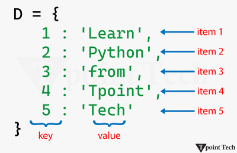

A Python Dictionary is one of the built-in data types used to store data in 'key: value' pairs. The dictionary is an unordered, mutable and indexed collection where each key is unique and maps to a value. It is often used to store related data, like information associated with a particular entity or object, where we can easily get value on the basis of its key.
Let us take a look at a simple example of a dictionary.
Example
# creating a Dictionary
D = {1: 'Learn', 2: 'Python', 3: 'from', 4: 'Tpoint', 5: 'Tech'}
print(D)
Output:
{1: 'Learn', 2: 'Python', 3: 'from', 4: 'Tpoint', 5: 'Tech'}In the above example, we have created a simple dictionary consisting of multiple 'key: value' pairs.
As we can observe, a dictionary in Python is a mapping data type where the value of one object maps to another. In order to establish the mapping between a key and a value, we have used the colon ':' symbol between the two.
Characteristics of Python Dictionary
A dictionary in Python is a data type with the following characteristics:
- Mutable: Dictionaries can be modified after initialization allowing us to add, remove or update 'key: value' pairs.
- Indexed: Unlike lists or tuples, which are indexed by position, dictionaries use keys to access values, offering faster and more readable data retrieval.
- Unordered: Python dictionary does not follow a particular order to store items. However, starting from Python 3.7, the feature for the dictionary to maintain the insertion order of the items was added.
- Unique Keys: Each key in a dictionary must be unique. If we try to assign a value to an existing key, the old value will be replaced by the new one.
- Heterogeneous: Keys and values in a dictionary can be of any type.
Creating a Dictionary
In Python, we can create a dictionary by enclosing the sequence of 'key: value' pairs with curly braces separated by commas. As an alternate option, we can use the Python's built-in dict() function.
Here is a simple example showing both ways of creating a dictionary in Python.
Example
# simple example to create python dictionary
# creating dictionaries
dict_zero = {} # empty dictionary
dict_one = {"name": "Lucy", "age": 19, "city": "New Jersey"} # using {}
dict_two = dict(name = "John", age = 21, city = "Havana") # using dict()
# printing the results
print("Empty Dictionary:", dict_zero)
print("Dictionary 1 (created using {}):", dict_one)
print("Dictionary 2 (created using dict()):", dict_two)
Output:
Empty Dictionary: {}
Dictionary 1 (created using {}): {'name': 'Lucy', 'age': 19, 'city': 'New Jersey'}
Dictionary 2 (created using dict()): {'name': 'John', 'age': 21, 'city': 'Havana'}
The above example shows different ways to create dictionaries in Python. We have also seen how to create an empty dictionary.
Note: The dict() function can also be used to transform an existing data type into a dictionary.
Accessing Dictionary Items
In Python, we can access the value of a dictionary item by enclosing that particular key with square brackets '[]'. Another way to access dictionary items is by the use of the get() method.
The following is a simple example showing the ways to access dictionary items in Python.
Example
# simple example to access dictionary items
# given dictionary
dict_x = {
"name": "Sachin",
"age": 18,
"gender": "male",
"profession": "student"
}
print("Person's Details")
# accessing dictionary items using keys
print("Name:", dict_x["name"])
print("Age:", dict_x["age"])
# accessing dictionary items using get()
print("Gender:", dict_x.get("gender"))
print("Profession:", dict_x.get("profession"))
Output:
Person's Details
Name: Sachin
Age: 18
Gender: male
Profession: student Here, we have accessed the different values of the dictionary items using the square brackets and get() method.
Adding Items to a Dictionary
The dictionary is a mutable data type that allows us to add an item to it. This can be done by assigning a value to a new key.
Let us take a look at a simple example showing how to add items to a Python dictionary.
Example
# simple example to add item to dictionary
# given dictionary
dict_x = {
"name": "Sachin",
"age": 18,
"gender": "male",
"profession": "student"
}
print("Given Dictionary:", dict_x)
# adding an item to the dictionary
dict_x["country"] = "India"
print("Updated Dictionary:", dict_x)Output:
Given Dictionary: {'name': 'Sachin', 'age': 18, 'gender': 'male', 'profession': 'student'}
Updated Dictionary: {'name': 'Sachin', 'age': 18, 'gender': 'male', 'profession': 'student', 'country': 'India'}
In this example, we have added a new 'key: value' pair to the dictionary using the assignment operator.
Removing Items from a Dictionary
Python offers multiple ways to remove items from a given dictionary, such as:
- del: This keyword is used to remove an item by key.
- pop(): This method is used to remove an item by key. It also returns the value of the removed item.
- popitem(): This method removes and returns the last 'key: value' pair.
- clear(): This method is used to remove all items from the dictionary.
Here is an example showing the use of different methods to remove items from a Python dictionary.
Example
# simple example to remove items from a dictionary
# given dictionary
dict_x = {
"name": "Sachin",
"age": 18,
"gender": "male",
"profession": "student",
"country": "India"
}
print("Given Dictionary:", dict_x)
# removing items from the dictionary
del dict_x['age'] # using del
print("Updated Dictionary (Removed 'age'):", dict_x)
popped_value = dict_x.pop('gender') # using pop()
print("Updated Dictionary (Removed 'gender'):", dict_x)
print("Popped Value:", popped_value)
popped_item = dict_x.popitem() # using popitem()
print("Updated Dictionary (Removed last item):", dict_x)
print("Popped Item:", popped_item)
dict_x.clear() # using clear()
print("Update Dictionary (Removed all items):", dict_x) Output:
Given Dictionary: {'name': 'Sachin', 'age': 18, 'gender': 'male', 'profession': 'student', 'country': 'India'}
Updated Dictionary (Removed 'age'): {'name': 'Sachin', 'gender': 'male', 'profession': 'student', 'country': 'India'}
Updated Dictionary (Removed 'gender'): {'name': 'Sachin', 'profession': 'student', 'country': 'India'}
Popped Value: male
Updated Dictionary (Removed last item): {'name': 'Sachin', 'profession': 'student'}
Popped Item: ('country', 'India')
Update Dictionary (Removed all items): {}In this example, we are given a dictionary. We have used several methods like del keyword, pop(), popitem(), and clear() methods to remove the items from the dictionary.
Changing Dictionary Items
In Python, we can change the values of an item in the dictionary by referring to its key.
Let us take a simple example to understand how to change dictionary items in Python.
# simple example to change dictionary items
# given dictionary
dict_x = {
"name": "Sachin",
"age": 18,
"gender": "male",
"profession": "student",
"country": "India"
}
print("Given Dictionary:", dict_x)
# changing dictionary items
dict_x["age"] = 20
dict_x["profession"] = "developer"
print("Updated Dictionary:", dict_x) Output:
Given Dictionary: {'name': 'Sachin', 'age': 18, 'gender': 'male', 'profession': 'student', 'country': 'India'}
Updated Dictionary: {'name': 'Sachin', 'age': 20, 'gender': 'male', 'profession': 'developer', 'country': 'India'}In this example, we have used the assignment operator to change the value of existing keys in the given dictionary. As a result, the dictionary items are updated.
Iterating Through a Dictionary
Starting from Python 3.7, a dictionary is an ordered collection of items; therefore, it maintains the order of its items. We can iterate through dictionary keys using the 'for' loop, as shown in the following example.
Example
# simple example to iterate through a dictionary
# given dictionary
dict_x = {
"Name": "Sachin",
"Age": 18,
"Gender": "Male",
"Profession": "Student",
"Country": "India"
}
print("Items in Dictionary:")
# iterating through a dictionary using for loop
for key in dict_x:
value = dict_x[key]
print(key, "->", value) Output:
Items in Dictionary:
Name -> Sachin
Age -> 18
Gender -> Male
Profession -> Student
Country -> IndiaIn the above example, we have used the 'for' loop to iterate through the keys in dictionary and accessed the value for each key
Finding Length of a Dictionary
In order to find the length of a dictionary, we can use Python's built-in function called len(). This function will return the total number of 'key: value' pairs present in a dictionary, allowing us to determine the size of the dictionary efficiently.
Let us see the following example showing the use of the len() function in determining the length of a Python dictionary.
Example
# simple example to determine length of a dictionary
# given dictionary
employees_info = {
"John": "Sr. Software Developer",
"Irfan": "UI/UX Designer",
"Lucy": "Human Resource Manager",
"Peter": "Team Lead",
"Johnson": "Business Developer",
}
print("Given Data:", employees_info)
# finding length of the dictionary
print("Size of Data:", len(employees_info)) # using len() Output:
Given Data: {'John': 'Sr. Software Developer', 'Irfan': 'UI/UX Designer', 'Lucy': 'Human Resource Manager', 'Peter': 'Team Lead', 'Johnson': 'Business Developer'}
Size of Data: 5In the above example, we have used the len() function in order to find out how many items are in the given dictionary.
Dictionary Membership Test
We can use the 'in' or 'not in' operators in order to check whether a key exists in a dictionary. Here's a simple example that shows how to see if a specified key is part of a dictionary in Python.
Example
# simple example to check membership
dict_y = {
'fruit': 'apple',
'vegetable': 'onion',
'dry-fruit': 'resins'
}
# using 'in' and 'not in' operators
print("Is 'fruit' a member of 'dict_y'?:", 'fruit' in dict_y)
print("Is 'beverage' a member of 'dict_y'?:", 'beverage' in dict_y)
print("Is 'beverage' NOT a member of 'dict_y'?:", 'beverage' not in dict_y)Output:
Is 'fruit' a member of 'dict_y'?: True
Is 'beverage' a member of 'dict_y'?: False
Is 'beverage' NOT a member of 'dict_y'?: TrueIn this example, we have used the 'in' and 'not in' operators to check if the specified keys are present in the given dictionary. The 'in' operator returns the Boolean value after checking if the key exists in the dictionary, whereas the 'not in' operator returns the Boolean value after checking if the key does not exist in it.
Dictionary Methods in Python
Python offers several dictionary methods in order to manipulate the data of a dictionary. These methods are commonly used to add, update, delete, and return elements from the dictionaries. Some of these methods are as follows:
| Dictionary Method | Description |
|---|---|
| get() | This method returns the value associated with a specific key. |
| update() | This method is utilized to add a new item to the dictionary or update the value of an existing key. |
| copy() | This method is utilized to return a copy of the dictionary. |
| pop() | This method removes the item with the given key from the dictionary. |
| popitem() | This method is utilized to return the last inserted key and value as a tuple. |
| clear() | This method removes all items from the dictionary. |
| keys() | This method returns all the keys in the dictionary. |
| values() | This method is utilized to return all the values in the dictionary. |
Python dictionaries are a fundamental and highly flexible data type that allow us to store, access, and manipulate data using 'key: value' pairs. They are optimized for fast lookups and can handle everything from simple mappings to complex nested data. Whether we are managing configuration files, processing JSON, or building data-driven applications, mastering dictionaries is essential for writing efficient and clean line of codes in real-world scenarios.
Python Dictionary Methods
In Python, Dictionary methods are the built-in functions that we can use to perform certain operations on dictionaries. Python dictionary is one of the most powerful data structures as this data type allows storing of data in the form of a "key: value" pair.
Python provides different effective and efficient methods allow us to add, update, delete, and return elements from dictionaries. Here is a list of such methods used to manipulate dictionary data:
| Method | Description |
|---|---|
| get() | This method returns the value associated with a specific key. |
| update() | This method is utilized to add a new item to the dictionary or update the value of an existing key. |
| copy() | This method is utilized to return a copy of the dictionary. |
| pop() | This method removes the item with the given key from the dictionary. |
| popitem() | This method is utilized to return the last inserted key and value as a tuple. |
| clear() | This method removes all items from the dictionary. |
| keys() | This method returns all the keys in the dictionary. |
| fromkeys() | This method is used to create a new dictionary from a sequence of keys and a value |
| items() | This method returns a view of the key: value pairs from the dictionary. |
| setdefault() | This method is used to return value if key exists, otherwise it sets key with default value |
| values() | This method is utilized to return all the values in the dictionary. |
1) get()
In Python, the dictionary's get() method is used to return the value associated with a particular key in a dictionary. It is a secure method in order to access the values of the dictionary without raising a KeyError exception in case the key is not present.
The syntax of the get() method is shown below:
Syntax
dict_name.get(key, default) Let us see an example to understand the working of the get() method in Python.
Example
# python program to show the use of get() method
# given dictionary
dict_one = {'name': 'Sachin', 'age': 22}
print("Given Dictionary:", dict_one)
# using the get() method
print(dict_one.get('name', 'Not Found'))
print(dict_one.get('salary', 'Not Found')) Output:
Given Dictionary: {'name': 'Sachin', 'age': 22}
Sachin
Not FoundIn the above example, we have used the get() method to return the value of the specified key. As we can see, the key 'name' is present in the dictionary. Therefore, it has returned its value, whereas a default value 'Not Found' is printed for the key 'salary', which is not present in the dictionary.
2) update()
The update() method is a built-in dictionary function in Python that allows us to update the key: value pairs of a dictionary with the help of the elements from another dictionary or an iterable of key: value pairs.
This method helps us add new data or merge it with existing dictionary entries efficiently and effectively.
The syntax of the update() method is shown below:
Syntax:
dict_name.update(other_dict)Let us see a simple example showing the use of the update() method in Python.
Example
# python program to show the use of update() method
# given dictionary
dict_one = {'name': 'Sachin', 'age': 22}
dict_two = {'salary': 69000, 'profession': 'software engineer'}
print("Given Dictionary:", dict_one)
# using the update() method
dict_one.update(dict_two)
print("Updated Dictionary:", dict_one)Output:
Given Dictionary: {'name': 'Sachin', 'age': 22}
Updated Dictionary: {'name': 'Sachin', 'age': 22, 'salary': 69000, 'profession': 'software engineer'}In this example, we have used the update() method to add the data from the specified dictionary to the targeted dictionary.
3) copy()
Python's copy() method is a built-in dictionary method. This method is utilized in order to create a shallow copy of the dictionary.
The syntax of the copy() method is shown below:
Syntax:
new_dict = old_dict.copy() We will now see an example showing the use case of the dictionary's copy() method in Python.
Example
# python program to show the use of copy() method
# given dictionary
dict_one = {'name': 'Sachin', 'age': 22}
print("Given Dictionary:", dict_one)
# using the copy() method
new_dict = dict_one.copy()
print("New Dictionary:", new_dict) Output:
Given Dictionary: {'name': 'Sachin', 'age': 22}
New Dictionary: {'name': 'Sachin', 'age': 22}Here, we have used the copy() method to create a shallow copy of the given dictionary by copying all items from it to the targeted dictionary.
4) pop()
The pop() method is one of the built-in Python methods used to remove the value of the specified key from the dictionary. It also returns the removed value. If the key is not present in the dictionary, we can set an optional value to be returned as default
The following is the syntax of the pop() method:
dict_name.pop(key)Let us see an example showing the use of the pop() method in Python.
Example
# python program to show the use of pop() method
# given dictionary
dict_one = {'name': 'Sachin', 'age': 22}
print("Given Dictionary:", dict_one)
# using the pop() method
age = dict_one.pop('age')
print("Popped Value:", age)
print("Updated Dictionary:", dict_one) Output:
Given Dictionary: {'name': 'Sachin', 'age': 22}
Popped Value: 22
Updated Dictionary: {'name': 'Sachin'}Here, we have used the pop() method to remove and return the value of the key 'age'.
5) popitem()
In Python, the popitem() method another built-in function used for dictionaries. The main objective of this method is to allow us to remove and return the last inserted key: value pair as a tuple. In case the dictionary is empty, this method will raise a KeyError exception.
Here is the syntax of the popitem() method in Python:
Syntax
dict_name.popitem() Let us see a simple example showing the use of the popitem() method.
Example
# python program to show the use of popitem() method
# given dictionary
dict_one = {'name': 'Sachin', 'age': 22}
print("Given Dictionary:", dict_one)
# using the popitem() method
popped_item = dict_one.popitem()
print("Popped Value:", popped_item)
print("Updated Dictionary:", dict_one) Output:
Given Dictionary: {'name': 'Sachin', 'age': 22}
Popped Value: ('age', 22)
Updated Dictionary: {'name': 'Sachin'}In the above example, we have used the popitem() method to remove and return the last inserted item from the specified dictionary.
6) clear()
The clear() method is a built-in function used to clear all the data from the Python dictionaries. This method allows us to remove all items from a given dictionary making it an empty dictionary.
The syntax of the clear() method is shown below:
Syntax:
dict_name.clear() We are now going to see a simple example of Python dictionary's clear() method.
Example
# python program to show the use of clear() method
# given dictionary
dict_one = {'name': 'Sachin', 'age': 22}
print("Given Dictionary:", dict_one)
# using the clear() method
dict_one.clear()
print("Updated Dictionary:", dict_one) Output:
Given Dictionary: {'name': 'Sachin', 'age': 22}
Updated Dictionary: {}In this example, we have used the clear() method to delete all the items from the dictionary. As a result, the specified dictionary became an empty dictionary.
7) keys()
In Python, the keys() method is a built-in dictionary function used to return a view object with dictionary keys, allowing us to access and iterate through the dictionary efficiently.
The following is the syntax of the keys() method:
Syntax:
dict_name.keys() Below is a simple example showing the implementation of the keys() method in Python.
Example
# python program to show the use of keys() method
# given dictionary
dict_one = {'name': 'Sachin', 'age': 22}
print("Given Dictionary:", dict_one)
# using the keys() method
print(dict_one.keys())Output:
Given Dictionary: {'name': 'Sachin', 'age': 22}
dict_keys(['name', 'age'])In this example, we have used the keys() method to return a dict_keys object consisting of all the keys from the given dictionary.
Example
Output:
Example
Output:
Example
Output:
Example
Output: